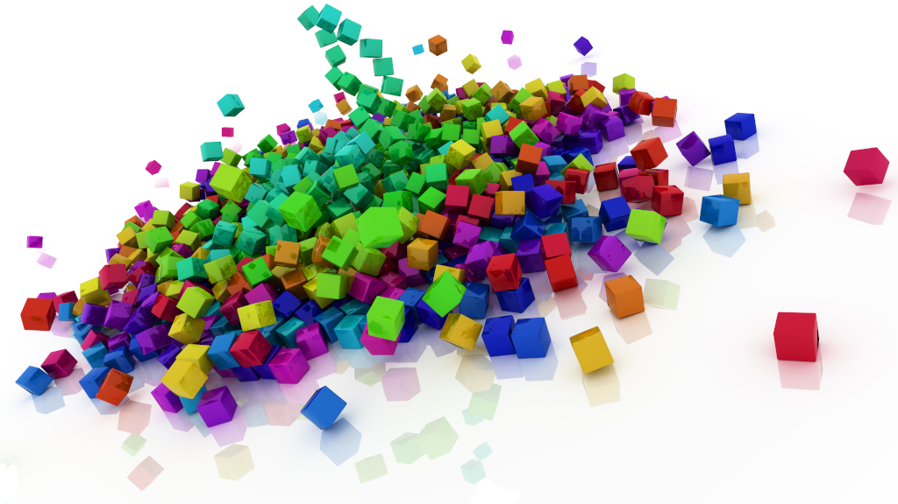
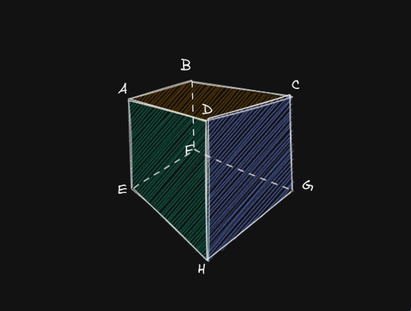
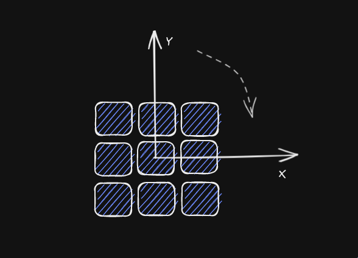

How Did I Build The Rubik Cube

Concept & Idea
The Rubik’s Cube is a 3-D combination puzzle that has been around since 1974. One of it’s interesting property is that there are so many combinations. Somebody has done the math and apparently it is indeed alot
The Rubik’s Cube is not only interesting, it is also beautiful aesthetically. Let’s take a look at some art people have done with cubes

Today I will use ThreeJS to build a Rubik’s Cube. Our Cube would be able to rotate like a real cube. We will not cover manual rotation here because a good controller would be very tricky to get right. We will also not cover Cube solving because I am not too smart, I just want to look at the Cube not solving them.
Breakdown
Build single cube

We need to consider 2 things
- The cube geometry
- The cube’s color data
Thank to ThreeJS we can make a cube geometry easily with
const piece = new THREE.BoxGeometry();Then we need to give color to each face
const vertices = piece.getAttribute("position").count;
const faces = vertices / 6;
const buffer = [];
const color = new THREE.Color();
for (let f = 0; f < faces; i++) {
color.setHex(getColor(x, y, z, f));
for (let j = 0; j < 6; j++) {
buffer.push(color.r, color.g, color.b);
}
}
piece.setAttribute("color", new THREE.Float32BufferAttribute(buffer, 3));If you have experience with OpenGL or something similar before, this code will looks obvious to your eyes. But if you don’t, here is a brief explaination about what the code done:
- Get the number of by taking . Because 3 make up a , 2 make up a
- For each face, calculate color based on that face, push the result to the buffer. Notice that we have to push 6 times for 6 vertices
- Send the color buffer back to vertices data
Here is our completed cube
Add more cubes (build 3x3 cubes)
When you have done making a single cube, it’s trivial to build more cubes. Just throw a loop and check out your new creation! Some small details to look out for:
- Remember to a little gap between cubes
- Avoid wasting resource by reusing material
for (let x = 0; x < cubeNum; x++) {
for (let y = 0; y < cubeNum; y++) {
for (let z = 0; z < cubeNum; z++) {
const geometry = makeSingleCube(x, y, z);
const cube = new THREE.Mesh(geometry, material);
cube.position.x = x * (1 + CUBE_MARGIN);
cube.position.y = y * (1 + CUBE_MARGIN);
cube.position.z = z * (1 + CUBE_MARGIN);
cubes[x][y][z] = cube;
scene.add(cube);
}
}
}Here is the finished 3x3 Cube
Rotate the cube
Here is the tricky part, obviously the cubes do not rotate one by one. There has to be a parent-child relation here. At first I was confused but later I figured it out.
My approach is based on some observation:
- Rotations has to be done in group
- We need to group relevant pieces together each time we rotate
- After we done rotating, ungroup them
- Rotation pivot stay the same at the center of the Cube

Group & rotate function
function startMove(face, depth, magnitude) {
for (let x = 0; x < cubeNum; x++) {
for (let y = 0; y < cubeNum; y++) {
for (let z = 0; z < cubeNum; z++) {
if (!isInFace(x, y, z, face, depth)) {
continue;
}
pivot.attach(cubes[x][y][z]);
}
}
}
let targetX = pivot.rotation.x;
let targetY = pivot.rotation.y;
let targetZ = pivot.rotation.z;
if (face == FACE_LEFT || face == FACE_RIGHT) {
targetX += (Math.PI / 2) * magnitude;
} else if (face == FACE_TOP || face == FACE_BOTTOM) {
targetY += (Math.PI / 2) * magnitude;
} else if (face == FACE_FRONT || face == FACE_BACK) {
targetZ += (Math.PI / 2) * magnitude;
}
anime({
targets: pivot.rotation,
x: targetX,
y: targetY,
z: targetZ,
easing: "linear",
duration: 600 * Math.abs(magnitude),
round: 100,
delay: 200,
complete: cleanUpAfterMove,
});
}Ungroup function
function cleanUpAfterMove() {
const clamp = function (n, l, r) {
return Math.min(r, Math.max(l, n));
};
const posToIndex = function (n) {
return clamp(Math.round(n / (1 + CUBE_MARGIN)), 0, cubeNum - 1);
};
let newCubes = cubes;
for (let i = pivot.children.length - 1; i >= 0; i--) {
const cube = pivot.children[i];
const pos = new THREE.Vector3();
scene.attach(cube);
cube.getWorldPosition(pos);
const x = posToIndex(pos.x);
const y = posToIndex(pos.y);
const z = posToIndex(pos.z);
cube.position.x = x * (1 + CUBE_MARGIN);
cube.position.y = y * (1 + CUBE_MARGIN);
cube.position.z = z * (1 + CUBE_MARGIN);
newCubes[x][y][z] = cube;
}
cubes = newCubes;
pivot.rotation.x = pivot.rotation.y = pivot.rotation.z = 0;
}The result will looks somewhere like this
And finally let’s add some variations
At this point, it’s up to your creativity to add more interesting features. I would like to add more dimension, then add some goofy easing curve to spice up the rotation.
Code
Currently I’m too lazy to make a minimal working demo. Here is the closest to that, Please checkout this file if you are interested (pardon the messy code 😁)